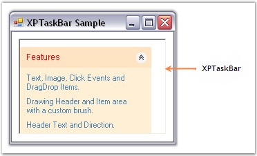
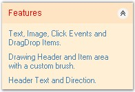

Padding Settings for XPTaskBar
The interior spacing of the XPTaskBar control can be specified by setting the DockPadding property to integer values.
The horizontal and vertical padding can be specified using the HorizontalPadding and VerticalPadding properties. The default value of the both is 'Zero'.
|
XPTaskBar Property |
Description |
|
DockPadding |
Specifies dock padding settings for all edges of the control. |
|
HorizontalPadding |
Specifies horizontal spacing between the layout taskbar. |
|
VerticalPadding |
Specifies vertical spacing between the layout taskbar. |
|
[C#]
this.xpTaskBar1.DockPadding.All = 10; this.xpTaskBar1.HorizontalPadding = 3; this.xpTaskBar1.VerticalPadding = 3; |
|
[VB.NET]
Me.xpTaskBar1.DockPadding.All = 10 Me.xpTaskBar1.HorizontalPadding = 3 Me.xpTaskBar1.VerticalPadding = 3 |

Figure 948: Padding Settings of XP TaskBar Illustrated
Padding Settings for XPTaskBar Box Header
Padding provides spacing between the text of the header and it's borders. Horizontal and vertical padding can be set using the PADX and PADY properties.
|
XPTaskBar Box Property |
Description |
|
PADX |
It sets horizontal padding provided in pixels between the text of the header and header's left and right borders. The default value is '5'. |
|
PADY |
It sets vertical padding provided in pixels between the text of the header and header's top and bottom borders. The default value is '5'. |
|
[C#]
this.xpTaskBarBox1.PADX = 7; this.xpTaskBarBox1.PADY = 7; |
|
[VB.NET]
Me.xpTaskBarBox1.PADX = 7 Me.xpTaskBarBox1.PADY = 7 |
The following figure displays the XPTaskBar Box with padding settings.

Figure 949: Padding Settings of XPTaskBar Box Illustrated